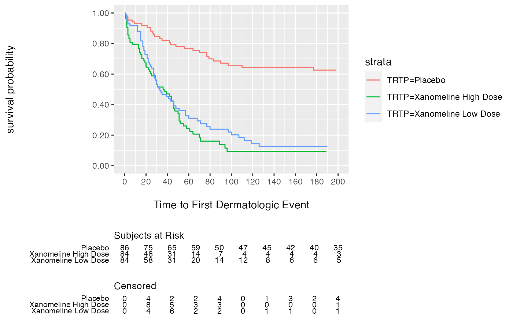
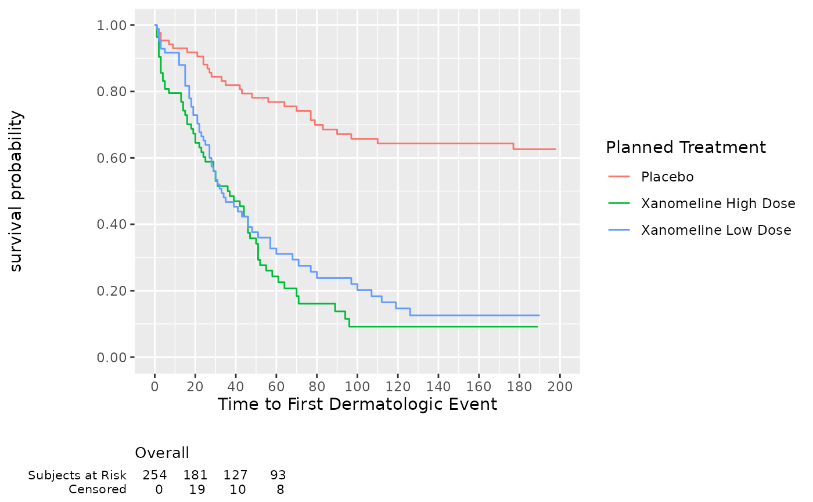
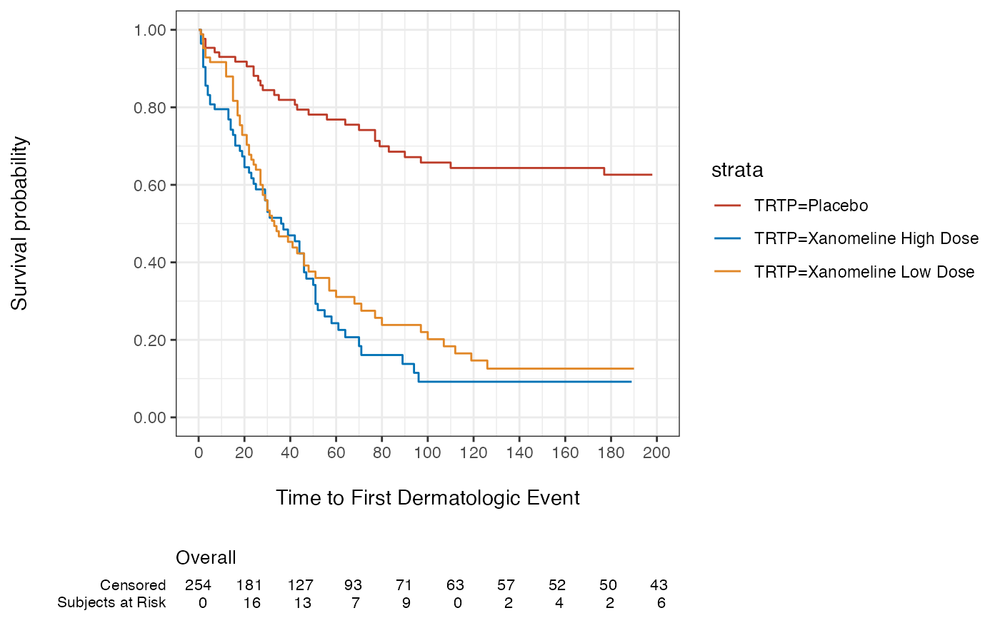

S3 method for adding risk tables to visR plots. The function has following workflow:
The risktables are calculated using
get_risktableThe risktables are placed underneath visR plots using
plot_gridBoth the initial visR plot as the individual risktables are stored as attribute
componentin the final object to allow post-modification of the individual plots if desired
Usage
add_risktable(gg, ...)
# S3 method for ggsurvfit
add_risktable(
gg,
times = NULL,
statlist = "n.risk",
label = NULL,
group = "strata",
collapse = FALSE,
rowgutter = 0.16,
...
)
# S3 method for ggtidycuminc
add_risktable(
gg,
times = NULL,
statlist = "n.risk",
label = NULL,
group = "strata",
collapse = FALSE,
rowgutter = 0.16,
...
)Arguments
- gg
visR plot of class
ggsurvfitorggtidycmprsk- ...
other arguments passed on to the method add_risktable
- times
Numeric vector indicating the times at which the risk set, censored subjects, events are calculated.
- statlist
Character vector indicating which summary data to present. Current choices are "n.risk" "n.event" "n.censor", "cum.event", "cum.censor". Default is "n.risk".
- label
Character vector with labels for the statlist. Default matches "n.risk" with "At risk", "n.event" with "Events", "n.censor" with "Censored", "cum.event" with "Cum. Event", and "cum.censor" with "Cum. Censor".
- group
String indicating the grouping variable for the risk tables. Current options are:
"strata": groups the risk tables per stratum. The
labelspecifies the label within each risk table. The strata levels are used for the titles of the risk tables. This is the default"statlist": groups the risk tables per statlist. The
labelspecifies the title for each risk table. The strata levels are used for labeling within each risk table.
Default is "strata".
- collapse
Boolean, indicates whether to present the data overall. Default is FALSE.
- rowgutter
A numeric relative value between 0 and 1 indicates the height used by the table versus the height used by the plot, as described in
cowplot::plot_grid(rel_heights=). The default is 0.16.
Examples
## Display 2 risk tables, 1 per statlist
adtte %>%
visR::estimate_KM(strata = "TRTP") %>%
visR::visr() %>%
visR::add_risktable(
label = c("Subjects at Risk", "Censored"),
statlist = c("n.risk", "n.censor", "n.event"),
group = "statlist"
)

## Display overall risk table at selected times
adtte %>%
visR::estimate_KM(strata = "TRTP") %>%
visR::visr() %>%
visR::add_risktable(
label = c("Subjects at Risk", "Censored"),
statlist = c("n.risk", "n.censor"),
collapse = TRUE,
times = c(0, 20, 40, 60)
)

## Add risk set as specified times
adtte %>%
visR::estimate_KM(strata = "TRTP") %>%
visR::visr() %>%
visR::add_risktable(times = c(0, 20, 40, 100, 111, 200))
